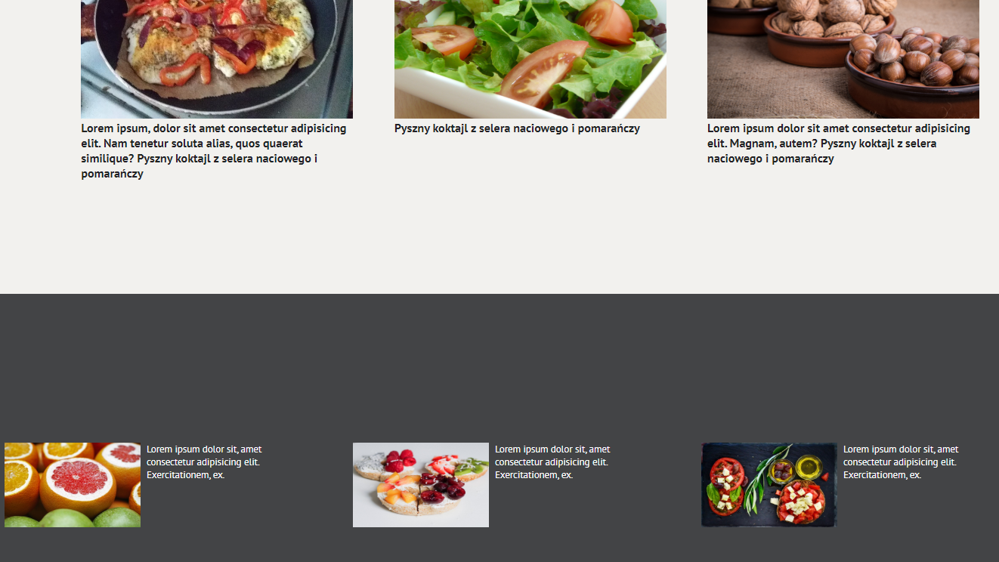
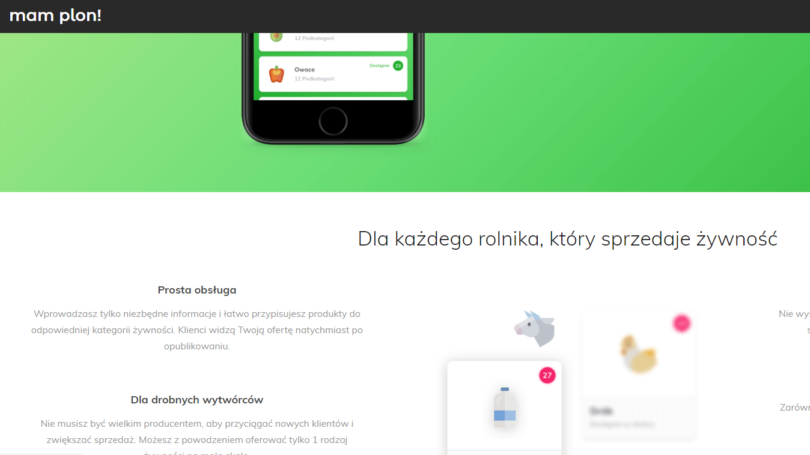
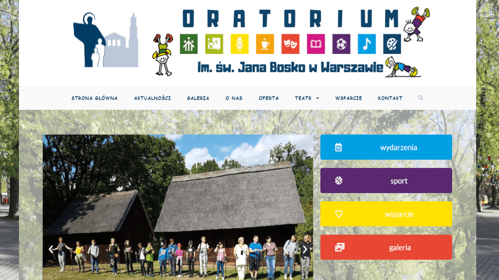
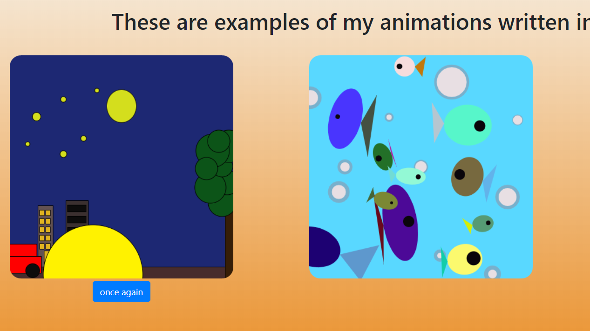

Oto moje przykładowe projekty wraz z krótkimi opisami
To jeden z moich pierwszych projektów. Jest to blog o zdrowym
stylu życia. Do jego wykonania wykorzystałam CSS3 oraz HTML5.
W tej pomysłowej aplikacji byłam odpowiedzialna za wykonanie
większości layoutów. Niektóre sporządziłam według szablonu, a niektóre zaprojektowałam sama.
Korzystałam z HTML5, CSS3 oraz Bootstrapa.
Strona internetowa, którą wykonałam dla Warszawskiego Oratorium, za pomocą Wordepressa. Jest już w użyciu.
Do wykonania tych animacji wykorzystałam bibiliotekę
Porcessing.js